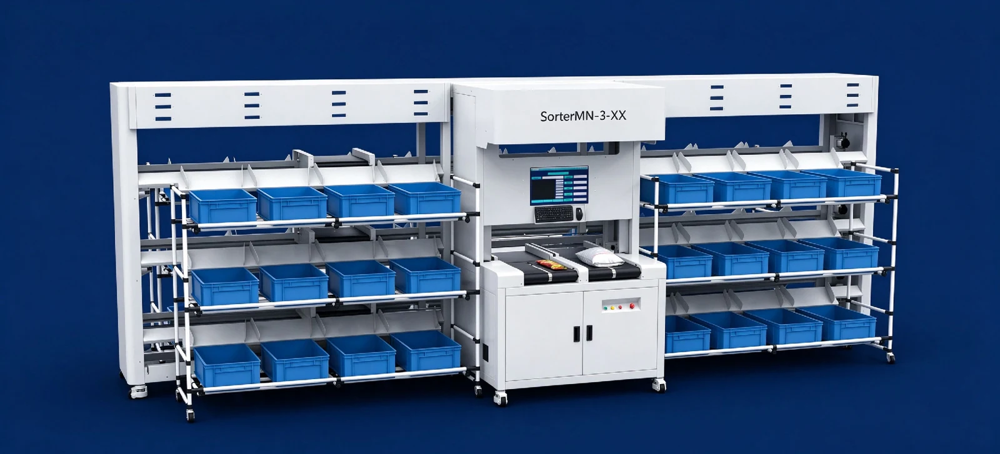

限られたスペースに配置しやすい一体型。作業者が投入した荷物を、注文別の間口へ自動で仕分けます。
数値は製造パートナーの2026年10月版製品資料に基づきます。実際の能力は荷物寸法・重量、投入条件、仕分け先数、ライン構成によって異なります。
この製品について相談する製品一覧へ戻る →製品の特長
省スペースの一体型
設置場所に合わせてレイアウトと間口構成を検討できます。
キャリッジの選択
通常タイプ・横桟付きから選択できます。
仕様と選定条件
| 最大仕分け能力 | 1,600 個/時 |
|---|---|
| 最大走行速度 | 2.5 m/s |
| 投入方式 | 半自動投入 |
数値は製造パートナーの2026年10月版製品資料に基づきます。実際の能力は荷物寸法・重量、投入条件、仕分け先数、ライン構成によって異なります。
SorterMN-3｜コンパクトな一体型 C01
省スペースで柔軟にレイアウト
一体型のプラグアンドプレイ設計。設置場所や取り扱う商品に合わせて間口構成を選べます。
| 項目 | C01 |
|---|---|
| 投入方式 | 半自動投入（作業者による投入・自動仕分け） |
| 最大仕分け能力 | 1,600個/時 |
| 最大走行速度 | 2.5 m/s |
| キャリッジの選択肢 | 通常タイプ / 横桟付き |
| 構造 | 省スペース一体型・プラグアンドプレイ |
| 仕分け間口 | 複数の構成に対応 |
導入前に確認する項目
荷物の最小・最大寸法と重量、必要処理量、仕分け先数、設置スペース、電源・温度帯、既存設備との接続条件をお知らせください。保守範囲や据付工程も個別に確認します。
仕様・お見積りを相談する